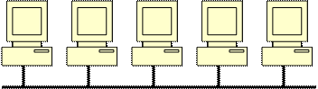
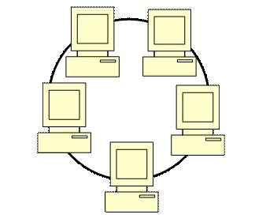
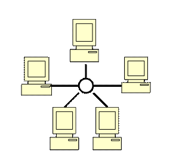

Топология сети
Под топологией сети понимается конфигурация графа, вершинам которого соответствуют компьютеры сети (иногда и другое оборудование, например концентраторы), а ребрам - физические связи между ними. Компьютеры, подключенные к сети, часто называют станциями или узлами сети.
Другими словами топология сети – это логическая схема соединения компьютеров каналами связи.
Чаще всего в локальных сетях используется одна из трех основных топологий: моноканальная (шинная), кольцевая или звездообразная.
При шинной топологии среда передачи информации представляется в форме коммуникационного пути, доступного для всех рабочих станций, к которому они все должны быть подключены. Все рабочие станции могут непосредственно вступать в контакт с любой рабочей станцией, имеющейся в сети. На концах коммуникационного пути размещаются терминаторы, служащие для гашения сигнала.
Рабочие станции в любое время, без прерывания работы всей вычислительной сети, могут быть подключены к ней или отключены. Функционирование вычислительной сети не зависит от состояния отдельной рабочей станции. При повреждении кабеля в любом мести сети вся сеть становится неработоспособной. Максимальная пропускная способность таких сетей составляет 10 Мбит/с. Такая пропускная способность недостаточна для современных видео- и мультимедийных приложений, поэтому почти повсеместно применяются сети со звездообразной архитектурой.
Достоинствами шинной топологии является низкая стоимость, простота построения и наращивания сети. Недостатки – низкая скорость работы сети и малая надежность.
При кольцевой топологии сети рабочие станции связаны одна с другой по кругу: последняя рабочая станция связана с первой, при этом коммуникационная связь замыкается в кольцо.
Прокладка кабелей от одной станции до другой может быть довольно сложной и дорогостоящей, особенно если географическое расположение рабочих станций далеко от формы кольца (например, в линию).
Сообщения в такой сети циркулируют регулярно по кругу. Пересылка сообщений является очень эффективной, так как большинство сообщений можно отправлять «в дорогу» по кабельной системе одно за другим. Продолжительность передачи информации увеличивается пропорционально количеству рабочих станций, входящих в вычислительную сеть.
Основная проблема, которая возникает в сетях кольцевой топологии, заключается в том, что каждая рабочая станция должна активно участвовать в пересылке информации, и в случае выхода из строя хотя бы одной из них вся сеть парализуется. Подключение новой рабочей станции требует краткосрочного выключения сети, так как во время установки кольцо должно быть разомкнуто.
Ограничения на протяженность вычислительной сети не существует, так как оно определяется исключительно расстоянием между двумя рабочими станциями.
Звездообразная топология
Этот тип топологии предполагает, что головная машина получает и обрабатывает все данные с периферийных устройств как активный узел обработки данных. Этот принцип применяется в системах передачи данных, например в электронной почте RelCom.
Вся информация между двумя периферийными рабочими местами проходит через центральный узел вычислительной сети. Для построения сети со звездообразной архитектурой в центре сети необходимо разместить концентратор (рис.3). Его основная функция – обеспечение связи между компьютерами, входящим в сеть, т.е. все компьютеры, включая файловый сервер, не связываются непосредственно друг с другом, а присоединяются к концентратору. Сети со звездообразной топологией поддерживают прогрессивные технологии Fast Ethernet и Gigabit Ethernet, что позволяет увеличить пропускную способность сети.
При использовании топологии этого типа пропускная способность сети определяется вычислительной мощностью узла сети и гарантируется для каждой рабочей станции. Коллизий (столкновений данных) в такой сети не возникает.
Топология в виде звезды является наиболее быстродействующей из всех топологий вычислительных сетей, поскольку передача данных между рабочими станциями происходит через центральный узел по отдельным линиям, используемым только этими рабочими станциями. Частота запросов на передачу информации от одной станции к другой невысокая по сравнению с достигаемой в других топологиях.
Достоинством является также и то, что повреждение одного из кабелей приводит к выводу из строя только того луча «звезды», где находится поврежденный кабель, при этом остальная часть сети остается работоспособной.
Недостатком этой архитектуры является более высокая стоимость, более сложная структура, а также особенности наращивания, заключающиеся в том, что концентраторы имеют ограниченное количество портов (соединительных элементов) для подключения компьютеров.
Наверх